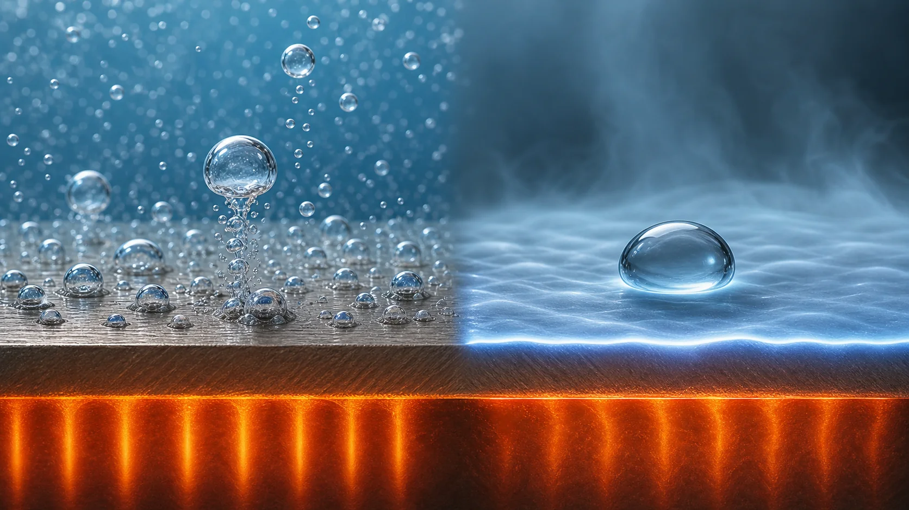
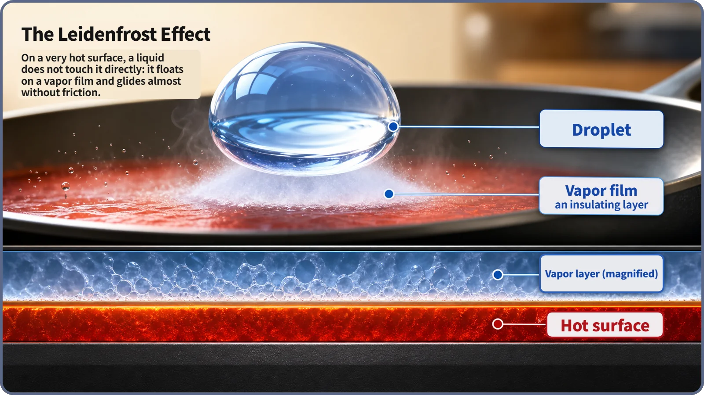
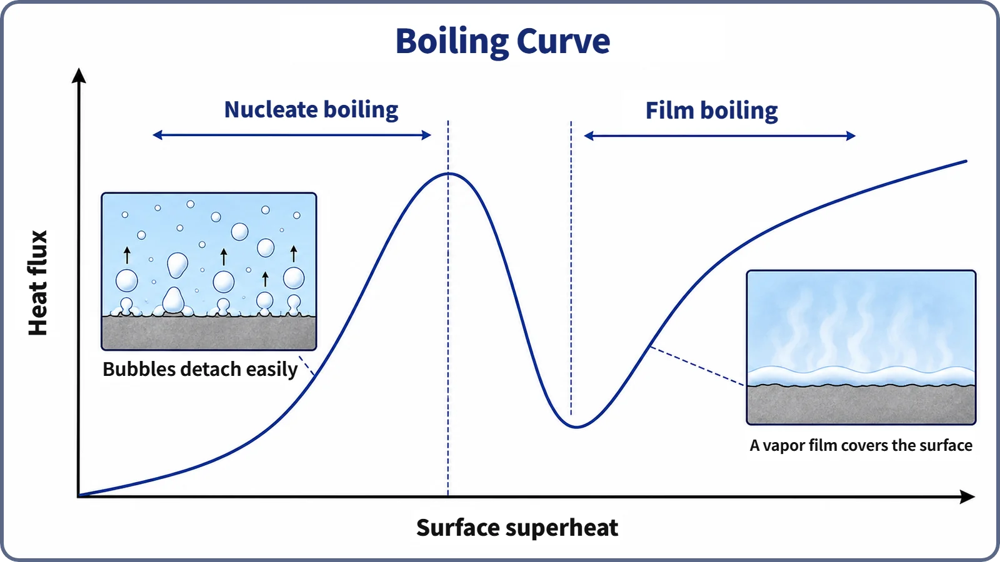

Heat Transfer & Thermal Hydraulics · 135
The Water Drop That Should Have Fizzled but Dances Instead — Nucleate vs Film Boiling
The difference is not whether bubbles form but whether liquid keeps touching the surface. A dancing drop on a hot pan shows why.

Nucleate and film boiling both make bubbles, but they differ in one decisive way: whether liquid keeps touching the hot surface. In nucleate boiling, bubbles form and leave individually and fresh liquid keeps rewetting the surface, so heat transfer improves. In film boiling, bubbles merge into a continuous vapor film that insulates the surface. A water drop skating on a very hot pan, the Leidenfrost effect, shows the same physics on a small scale.
A drop that dances instead of fizzling
Flick a drop of water onto a moderately hot frying pan and it sizzles away almost instantly. Make the pan much hotter and the drop survives much longer, bouncing and skating like an air-hockey puck before slowly disappearing. Common sense says a hotter pan should evaporate it faster, yet the opposite happens. This is the Leidenfrost effect, named after the German physician Johann Gottlob Leidenfrost, who described it in 1756.
Nucleate boiling: the drop clings and sizzles
On the moderately hot pan, the drop boils while touching the surface. Tiny bubbles form nonstop on its underside and rise away, and water instantly refills each spot. Surface and water stay in almost constant contact, so heat flows very actively.
This is nucleate boiling. "Nucleate" has nothing to do with atomic nuclei or fission: it comes from nucleation sites, tiny pits and scratches where the water locally passes its boiling point and a bubble is born. The bubble grows, breaks free and rises, and surrounding water rushes in. Departing bubbles stir the water and the refilled spots touch the surface again, so contact is constantly renewed. A surface in nucleate boiling carries away far more heat than one where water is only warmed without boiling (single-phase convection).
Film boiling: the bubbles merge into a shield
Heat the pan much more and, past a threshold temperature difference, bubbles form so fast and so many that they merge with their neighbors before breaking away. Soon the drop's whole underside is covered by one continuous thin film of vapor, and the drop floats on it.
Vapor conducts heat roughly a few tens of times worse than liquid water, so the film acts like a layer of insulation. Even though the surface is much hotter, heat struggles to reach the drop, and it evaporates slowly. This is film boiling. The drop lasts longer not because the pan is cooler but because it is much hotter: the heat forms the isolating film almost instantly.

The real dividing line
| Nucleate boiling | Film boiling | |
|---|---|---|
| Bubbles | Form and leave individually at particular spots | Merge into a continuous vapor film |
| Liquid–surface contact | Direct contact over most of the surface, most of the time | No direct contact; vapor always in between |
| Heat transfer | Good: much larger h | Poor: vapor acts as insulation |
| Surface temperature | Lower | Much higher, yet less heat carried per unit area |
So bubbles are not bad in themselves; what matters is whether they blanket the entire surface. Well-developed nucleate boiling has a much larger heat transfer coefficient (h) than film boiling, and the reversal seen with the water drop appears at reactor scale too.

Why it matters in a reactor core
Heat transfer between the fuel cladding surface and the coolant follows the same principle. Nucleate boiling is helpful, and some reactors use it in normal operation: boiling water reactors make steam in the core, and pressurized water reactors have operating regions where local nucleate boiling occurs. The extent allowed in a PWR depends on reactor type and design.
Film boiling is a state reactor safety design must avoid. Once it starts, the vapor film can make the cladding surface temperature soar, which bears directly on cladding integrity. Reactors are therefore designed and operated with margin in power, coolant flow and pressure so that film boiling does not start anywhere in the core.
Key takeaways
- Nucleate boiling keeps liquid in direct contact with the surface and boosts heat transfer.
- Film boiling blankets the surface in vapor, cutting off contact and badly hindering heat transfer.
- The dividing line is not whether bubbles exist but whether liquid keeps touching the surface.
- The Leidenfrost drop on a hot pan shows the same physics as film boiling in a reactor core.
- Reactors use nucleate boiling but are designed and operated to avoid film boiling.